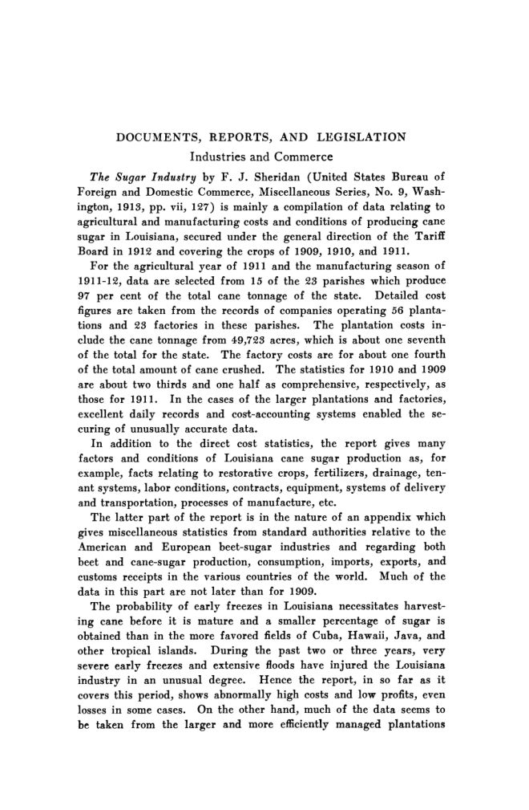

Setembro de 1913: pools, dólar compensado e a teoria da impaciência
Leitura: 15 min
Stevens classifica os pools americanos, Clark procura falhas no dólar compensado, Agger defende a concorrência, Jacobstein mede o crédito rural e Fisher e Seager discutem produtividade e juros.


Em 1887, os destiladores de uísque do Kentucky assinaram um acordo que dizia garantir a cada um o direito de produzir quanto quisesse. Ao lado do nome de cada signatário, porém, havia uma cota de 100 galões, pequena demais para que qualquer destilaria começasse a operar. William S. Stevens, da Columbia University, usa o caso para mostrar que o texto de um pool pode enganar: o que parecia divisão de produção era, na prática, corte de produção.
O número de setembro de 1913 da American Economic Review abre com a classificação de pools e associações de Stevens e traz mais cinco artigos curtos. J. M. Clark, do Amherst College, procura complicações práticas no dólar compensado de Irving Fisher. Eugene E. Agger, da Columbia, critica uma teoria que fazia da autodestruição da concorrência uma lei. Meyer Jacobstein, da University of North Dakota, mede o custo do crédito rural em seu estado. Frederick Barnard Hawley defende sua definição de economia com apoio em Herbert Spencer. E Fisher responde a Henry R. Seager sobre a teoria da impaciência, com uma tréplica curta de Seager. Seguem resenhas, listas de livros novos, documentos, resumos de periódicos e notas.
Como classificar um pool?
William S. Stevens (Columbia University) · “A Classification of Pools and Associations Based on American Experience” · pp. 545–575
Stevens parte da observação de que os mesmos traços estruturais se repetem em pools e associações de setores muito diferentes. Propõe uma classificação em dois grandes grupos. O pool simples, ou simplex, tem um só objetivo; o misto combina dois ou mais, e passa a ser duplex, triplex ou quadruplex. Os mistos, diz, são apenas combinações dos sete tipos simples: divisão de produção ou de tráfego, corte de produção, divisão de território, vendas conjuntas, preço, câmara de compensação e o que chama de associação do comerciante legítimo.
Cada tipo vem com exemplos tirados de processos, inquéritos do Congresso e estudos anteriores. Os primeiros pools americanos de que há registro foram os da cordoaria, a partir de cerca de 1860: os fabricantes dividiam o mercado em percentuais, e quem vendia acima de sua cota pagava ao supervisor uma quantia por libra, repassada aos que ficavam abaixo. O mesmo desenho reaparece, observa Stevens, na Atlantic Passenger Conference de 1908, que dividia o tráfego de terceira classe entre companhias de navegação.
A distinção entre tipos exige ler além do texto. No pool de vendas conjuntas, como a Michigan Salt Association, o preço surge do próprio ato de vender, e o caso é simples; quando os membros fixam o preço que o agente deve cobrar, o pool é misto. A associação do comerciante legítimo é o tipo mais recente: varejistas e atacadistas tentam impedir que fabricantes vendam direto ao consumidor, com listas de quem pode ser considerado revendedor e pressão sobre quem as desrespeita.
Entre os mistos, Stevens descreve pools de aço, de explosivos, de carvão, de papel e de alumínio, e acordos internacionais de divisão de território. O mais complexo seria a Wire Nail Association, de 1895, que compensava lucros, dividia e limitava a produção e fixava preços. A conclusão contraria uma opinião difundida: o pool não era forma abandonada; pelo número de casos recentes, talvez fosse mais usado do que nunca.
Que problemas práticos teria o dólar compensado?
J. M. Clark (Amherst College) · “Possible Complications of the Compensated Dollar” · pp. 576–588
J. M. Clark escreve, diz, como quem acredita no princípio do plano de Fisher e quer submetê-lo à discussão mais ampla possível. Começa separando o que o plano promete do que não promete. Não impediria mudanças de preços relativos nem corrigiria a desigualdade; mas acabaria com a queda dos títulos enquanto tudo o mais subia e ajudaria o empresário a saber se seu lucro vinha de eficiência ou só do atraso de salários e juros em relação aos preços.
A primeira complicação é o lastro. Sob o plano, cada aumento do peso de ouro do dólar reduz automaticamente o número de dólares que o ouro do Tesouro pode resgatar. Clark parte de um lastro de cerca de 70% da moeda do governo, contando a venda gradual da prata. Uma alta de 3% nos preços o levaria a pouco menos de 68%; se o ouro perdesse metade do valor, ficaria em 35%, com o mesmo número de onças. O secretário do Tesouro, escreve, teria de correr como Alice ao lado da Rainha Vermelha para ficar no mesmo lugar.
A segunda é a depreciação do ouro. Se o plano estabilizasse os preços, quase todo o ouro novo iria para o mercado industrial, que até então absorvia cerca de um terço da produção. Com a elasticidade estimada, triplicar essa oferta reduziria o valor do ouro a cerca de um terço; descontada a queda provável da mineração, a perda ficaria entre um terço e metade. Com adesão parcial de países que tivessem dois terços do ouro amoedado do mundo, a queda seria de 25% a 30% em dez ou quinze anos, além da tendência de alta que o próprio Fisher previa.
Daí duas consequências. Os primeiros governos a aderir arcariam com a maior perda, como os Estados Unidos com sua prata em relação às Filipinas e ao Panamá. E os ganhos que Fisher esperava das operações de compra e venda de ouro poderiam virar perdas se o movimento do valor do ouro durasse vários períodos de ajuste. Clark sugere que os governos comprem ouro com receitas correntes, segundo regra rígida, sempre que o lastro caísse abaixo de um mínimo.
A concorrência destrói a si mesma?
Eugene E. Agger (Columbia University) · “Monopoly and Competitive Prices” · pp. 589–597
Eugene E. Agger parte da divisão da política americana diante dos trustes. De um lado, os que viam o colapso da concorrência como inevitável e defendiam o monopólio regulado, grupo em que inclui o reitor Van Hise, o ex-presidente Roosevelt e o Partido Progressista, e J. W. Jenks. De outro, os que defendiam a concorrência regulada, posição que, diz, triunfara ao menos temporariamente com a eleição de Woodrow Wilson. Aceitar a inevitabilidade, argumenta, exigiria mudar a teoria dos preços de concorrência e de monopólio.
O alvo é um opúsculo de Frederick C. Hicks, da University of Cincinnati, Competitive and Monopoly Price, de 1911. Hicks sustentava que concorrência e monopólio não são campos distintos, mas forças que se limitam mutuamente. O preço de monopólio não sobe além de certo ponto porque os vendedores de outros bens disputam a renda do comprador; o preço de concorrência não cai abaixo do custo porque os vendedores restantes agem em conjunto. Deixada a si mesma, a concorrência levaria à própria destruição, e a política deveria equilibrar as duas forças, o que daria base teórica à regra da razão aplicada pela Suprema Corte ao Sherman Act.
“A concorrência é, no fundo, um estado de espírito.” (“competition is at bottom a state of mind”)
Agger responde em quatro pontos. Primeiro, confundir a concorrência entre mercadorias com a concorrência entre pessoas, distinção que atribui a Seligman, não ajuda: a lei quer preservar a segunda. Segundo, a renda que deixa de ir ao bem monopolizado pode ser poupada, e não gasta em outros bens. Terceiro, existe concorrência entre compradores, como num leilão, e é ela que sustenta o preço de concorrência. Quarto, a concorrência só se autodestrói com rendimentos crescentes, grande capital fixo especializado ou concorrentes muito desiguais; nos demais casos, os rendimentos decrescentes impedem esse desfecho.
Sobre a justiça para o produtor, lembra que a saída de alguns fatores afeta os que ficam: a terra livre no Oeste, usada por poucos, sustentou salários e juros em todo o país. A conclusão é que Hicks não ofereceu base teórica convincente para a regra da razão.
Quanto custava o crédito ao agricultor da Dakota do Norte?
Meyer Jacobstein (University of North Dakota) · “Farm Credit in a Northwestern State” · pp. 598–605
Meyer Jacobstein escrevera nos jornais de Grand Forks e Fargo defendendo crédito cooperativo para os agricultores do estado. Os banqueiros responderam que os juros não eram altos e que, onde pareciam altos, a causa eram condições locais. Para resolver a controvérsia, ele enviou questionários a bancos, revendedores de implementos e agricultores. O estado era jovem e agrícola: cerca de 90% da população rural, 8,2 habitantes por milha quadrada, contra 30,9 no país, e só 45% da terra melhorada.
Dos 200 bancos consultados, 125 responderam, com dados de 45 dos 50 condados. A hipoteca rural média durava 4,94 anos e pagava 7,88% ao ano, sem contar as despesas de título, registro e avaliação, pagas pelo tomador. Como os juros do ano costumavam ser descontados adiantados, a taxa efetiva subia para 8,7%. As taxas eram menores no vale do Red River, a leste, e chegavam a 10% e 12% nos condados novos do oeste; os 29 agricultores que responderam informaram média de 7,91%.
O crédito de loja pesava ainda mais. Segundo 54 revendedores de implementos em 35 condados, só 13% dos agricultores pagavam máquinas à vista. Uma ceifadeira-atadeira de US$ 160 a prazo saía por US$ 150 à vista; como alguns revendedores cobravam até US$ 160 pelo que se compraria por US$ 150 com dinheiro emprestado a 10% por quatro meses, Jacobstein calcula que o juro implícito chegava a 20% ao ano. Segundo o Crop Reporter de abril de 1913, a taxa de curto prazo do estado era a mais alta do país.
Ele reconhece as condições locais: demanda de capital maior que a oferta, risco de um estado novo com monocultura de trigo, comissões de intermediários de 1% a 2% e limites legais aos empréstimos imobiliários dos bancos. Ainda assim, conclui que associações cooperativas de crédito poderiam baixar os juros e ajudar a melhorar a agricultura.
Onde termina a economia e começa a sociologia?
Frederick Barnard Hawley · “The Definition of Economics” · pp. 606–609
Frederick Barnard Hawley quer chamar a atenção dos economistas para a definição de economia que propusera em seu livro Enterprise and the Production Process. O caminho para obtê-la é uma classificação das ações humanas voluntárias. A primeira divisão separa as ações individuais das coordenadas ou combinadas. A atividade econômica é uma subclasse das combinadas, e o problema passa a ser distingui-la das outras ações coordenadas.
O critério, para Hawley, é o propósito. As ações sociais são movidas por um propósito público, empreendidas em benefício real ou suposto do grupo como um todo, e a parte do benefício que cabe a cada membro não é determinada de antemão. As ações econômicas são movidas por propósitos individuais, e por isso exigem, antes de começar, um acordo definido sobre a parte do resultado que caberá a cada um. Quando o produto é divisível, basta fixar percentuais. Quando não é, reparte-se o valor: o empregador assume o risco da empresa, paga quantias previamente acertadas aos demais e fica com o que sobra.
A novidade do artigo é a coincidência que Hawley encontra no segundo volume da Sociology de Herbert Spencer. Spencer distingue a cooperação espontânea, que cresce sem plano na busca de fins privados e produz a divisão do trabalho, da cooperação consciente, voltada a fins públicos, que produz a organização política e exerce coerção. A primeira serve diretamente aos indivíduos e indiretamente à sociedade; a segunda, ao contrário.
Hawley conclui que Spencer dividiu as ações humanas em três classes que coincidem com as suas: uma individual e duas cooperativas, uma social e outra econômica. Um exemplo marca a fronteira: o livre-cambista que, esperando ganho privado, vota por uma tarifa protetora pratica ação social, porque o benefício esperado é indefinido. O autor admite que a coincidência não prova a definição, mas pede que ela seja examinada, já que, diz, quase todo tratado trata como econômicas atividades individuais ou sociais.
A teoria da impaciência esqueceu a produtividade?
Irving Fisher · “The Impatience Theory of Interest” · pp. 610–618; Henry R. Seager · comentário · pp. 618–619
Em dezembro de 1912, Henry R. Seager criticara na revista a teoria da impaciência de Irving Fisher por não levar em conta a produtividade, ou a técnica de produção. Fisher responde que a crítica o surpreendeu: o elemento técnico, longe de faltar, seria a parte mais original de seu The Rate of Interest. O que Seager examinou e achou correto, diz, era o que ele devia a Böhm-Bawerk e a John Rae.
A explicação para o desencontro, segundo Fisher, é que Seager se apoiou na exposição curta de seu manual, os Elementary Principles of Economics, onde o tema foi quase omitido por ser controverso demais para um livro-texto. No livro maior, a produtividade ocupa os capítulos 8, 9, 10 e 13. Fisher lembra ainda que o economista matemático dificilmente omite uma condição, porque conta equações e incógnitas.
A divergência substantiva é uma só. Seager acredita que dobrar a produtividade de todo o capital elevaria a taxa de juros; Fisher, que acabaria por baixá-la. O argumento dele é que a produtividade maior baixa o preço dos produtos e pode elevar o custo de produzir capital, e que a renda maior da sociedade reduz a impaciência de quem a possui. Durante a transição, admite, os juros tenderiam a subir, mas não depois. Há ainda um ponto menor, sobre por que os clientes de casas de penhor não conseguem tomar emprestado até igualar sua impaciência à taxa de mercado: para Fisher, o limite principal é a falta de garantias.
Seager, no comentário, admite ter exagerado ao dizer que Fisher ignorava por completo a produtividade, mas mantém que o tratamento é incompleto e que um método que perde um elo essencial ao ser simplificado está quase condenado por si mesmo. Discorda sobre os clientes das casas de penhor, porque pessoas imprevidentes não percebem plenamente as consequências futuras de seus atos, e lembra Jevons para dizer que economistas matemáticos também enxergam um fator e esquecem outros.
O que mais há na edição?
As resenhas abrem com T. N. Carver sobre os Elementary Principles of Economics de Fisher e com J. M. Clark sobre Wealth and Welfare, de A. C. Pigou; Frank A. Fetter resenha dois livros alemães, um deles sobre a crise da economia política na Alemanha. D. C. Munro trata dos estudos de Werner Sombart sobre luxo, guerra e capitalismo; M. B. Hammond, do Railroads: Rates and Regulation de W. Z. Ripley; H. L. Hollingworth, da psicologia industrial de Hugo Münsterberg; e Kate Holladay Claghorn, de três livros sobre imigração. Os documentos começam por um estudo do custo de produção do açúcar de cana na Louisiana. As notas registram os nomes indicados pelo presidente Wilson para a Industrial Relations Commission, entre eles John R. Commons.
Na minha leitura
Na minha leitura, a edição é uma coleção de testes de teorias contra casos. Stevens classifica pools pelo que faziam e não pelo que diziam, e mostra que o texto do acordo muitas vezes engana. Clark mede a elasticidade da demanda de ouro antes de julgar o plano de Fisher, e Jacobstein troca a discussão sobre juros altos ou baixos por questionários.
Agger e o debate Fisher–Seager mostram o outro lado: quando a disputa é sobre teoria, a dificuldade é saber o que exatamente está sendo afirmado. Agger mostra que a autodestruição da concorrência depende de condições específicas, como rendimentos crescentes; Fisher e Seager concordam que a produtividade importa e divergem sobre como ela entra na determinação dos juros.
Glossário
- Pool
- acordo entre empresas independentes para dividir mercado, produção ou lucros, ou fixar preços.
- Dólar compensado
- plano de Fisher de variar o ouro por dólar conforme um índice de preços.
- Elasticidade da demanda
- sensibilidade da quantidade demandada a variações de preço ou de valor.
- Regra da razão
- critério da Suprema Corte americana de condenar só as restrições ao comércio consideradas não razoáveis.
- Crédito de loja
- venda a prazo pelo comerciante, com preço maior que o pagamento à vista.
- Teoria da impaciência
- explicação de Fisher para os juros pela preferência por renda presente sobre a futura.
Artigos (6)
- A Classification of Pools and Associations Based on American Experience — William S. Stevens (Columbia University) (pp. 545–575) · resenha acima · comentário completo · JSTOR
- Possible Complications of the Compensated Dollar — J. M. Clark (Amherst College) (pp. 576–588) · resenha acima · JSTOR
- Monopoly and Competitive Prices — Eugene E. Agger (Columbia University) (pp. 589–597) · resenha acima · JSTOR
- Farm Credit in a Northwestern State — Meyer Jacobstein (University of North Dakota) (pp. 598–605) · resenha acima · JSTOR
- The Definition of Economics — Frederick Barnard Hawley (pp. 606–609) · resenha acima · JSTOR
- The Impatience Theory of Interest — Irving Fisher (pp. 610–618) · resenha acima · comentário completo · JSTOR
Resenhas (36)
- Irving Fisher, Elementary Principles of Economics — T. N. Carver (pp. 620–623). Manual de princípios de economia de Fisher. JSTOR
- A. C. Pigou, Wealth and Welfare — J. M. Clark (pp. 623–625). Estudo de Pigou sobre a relação entre riqueza e bem-estar econômico. JSTOR
- Ludwig Pohle, Die gegenwärtige Krisis in der deutschen Volkswirtschaftslehre, e Julius Wolf, Die Volkswirtschaft der Gegenwart und Zukunft — Frank A. Fetter (pp. 625–627). Dois livros alemães sobre a crise da economia política na Alemanha e sobre a economia do presente e do futuro. JSTOR
- Emanuel Sella, Der Wandel des Besitzes. Versuch einer Theorie des Reichtums als Organismus — Anna Youngman (pp. 627–629). Ensaio, traduzido do italiano, que trata a riqueza como organismo. JSTOR
- Clesson S. Kinney, The Law of Irrigation and Water Rights — Ralph H. Hess (pp. 631–632). Tratado em quatro volumes sobre o direito de irrigação e de águas. JSTOR
- William S. McClellan, Smuggling in the American Colonies at the Outbreak of the Revolution — Frank W. Pitman (pp. 632–633). Estudo do contrabando nas colônias americanas, com ênfase no comércio com as Índias Ocidentais, premiado com o David A. Wells Prize. JSTOR
- Winfred Trexler Root, The Relations of Pennsylvania with the British Government — Charles M. Andrews (pp. 633–635). Estudo das relações da Pensilvânia colonial com o governo britânico. JSTOR
- Mary Roberts Coolidge, Why Women Are So — A. B. Wolfe (pp. 635–637). Livro sobre a formação dos papéis sociais das mulheres. JSTOR
- Hugh H. Lusk, Social Welfare in New Zealand — J. E. LeRossignol (pp. 637–638). Relato da legislação social da Nova Zelândia. JSTOR
- Anton A. Fleck, Kanada. Volkswirtschaftliche Grundlagen und weltwirtschaftliche Beziehungen — O. D. Skelton (pp. 638). Estudo alemão sobre a economia do Canadá e suas relações com a economia mundial. JSTOR
- Werner Sombart, Studien zur Entwicklungsgeschichte des modernen Kapitalismus: Luxus und Kapitalismus; Krieg und Kapitalismus — D. C. Munro (pp. 639–641). Dois volumes de Sombart sobre o papel do luxo e da guerra na formação do capitalismo moderno. JSTOR
- William Z. Ripley, Railroads: Rates and Regulation — M. B. Hammond (pp. 647–651). Tratado de Ripley sobre tarifas e regulação ferroviária. JSTOR
- John E. Brindley, History of Road Legislation in Iowa e Road Legislation in Iowa — John A. Fairlie (pp. 651–652). Dois estudos sobre a legislação de estradas em Iowa. JSTOR
- Harold G. Moulton, Waterways Versus Railways — Ralph H. Hess (pp. 652–655). Ensaio premiado na série Hart, Schaffner & Marx que compara hidrovias e ferrovias. JSTOR
- Hugo Münsterberg, Psychology and Industrial Efficiency — H. L. Hollingworth (pp. 657–658). Livro sobre a aplicação da psicologia à eficiência industrial. JSTOR
- Samuel F. Racine, Accounting Principles — W. T. Jackman (pp. 658–660). Manual de princípios de contabilidade. JSTOR
- Ernst Picard, Die Finanzierung nordamerikanischer Eisenbahngesellschaften — F. W. Powell (pp. 660–661). Estudo alemão sobre o financiamento das companhias ferroviárias norte-americanas. JSTOR
- Depreciation and Wasting Assets and Their Treatment in Assessing Annual Profit and Loss — P. D. Leake (pp. 661–662). Nota do autor do livro sobre o tratamento contábil da depreciação de ativos consumíveis. JSTOR
- Mary van Kleeck, Women in the Bookbinding Trade — Susan M. Kingsbury (pp. 667–668). Estudo sobre o trabalho feminino na encadernação, com introdução de Henry R. Seager. JSTOR
- Ernest Mahaim, Le Droit International Ouvrier — Lindley D. Clark (pp. 668–670). Estudo do direito internacional do trabalho. JSTOR
- Maurice Halbwachs, La Classe Ouvrière et les Niveaux de Vie — Theodore W. Glocker (pp. 670–672). Pesquisa sobre a hierarquia das necessidades e os padrões de vida operários nas sociedades industriais. JSTOR
- Alexander Wende, Die Konzentrationsbewegung bei den deutschen Gewerkschaften — David A. McCabe (pp. 672–673). Estudo sobre a concentração dos sindicatos alemães. JSTOR
- Barthélemy Raynaud, Vers le Salaire Minimum — A. N. Holcombe (pp. 673). Livro francês sobre o movimento pelo salário mínimo. JSTOR
- Marcel Lenoir, Études sur la Formation et le Mouvement des Prix — Everett W. Goodhue (pp. 676–677). Estudos estatísticos sobre a formação e o movimento dos preços. JSTOR
- Frederick A. Wood, The Finances of Vermont — C. C. W. (pp. 680–681). Estudo das finanças do estado de Vermont, da série da Columbia University. JSTOR
- John Hedley Higginson, Tariffs at Work. An Outline of Practical Tariff Administration — N. I. Stone (pp. 681–682). Esboço da administração prática de tarifas aduaneiras. JSTOR
- Andreas Voigt, Mathematische Theorie des Tarifwesens — T. S. Adams (pp. 682–684). Teoria matemática das tarifas de impostos e preços, com atenção ao imposto de renda prussiano. JSTOR
- Frank Julian Warne, The Immigrant Invasion; Peter Roberts, The New Immigration; Frederic J. Haskin, The Immigrant. An Asset and a Liability — Kate Holladay Claghorn (pp. 686–688). Três livros sobre a imigração para os Estados Unidos. JSTOR
- Edward Isaacson, The Malthusian Limit — A. B. Wolfe (pp. 688–689). Livro sobre os limites malthusianos ao crescimento da população. JSTOR
- John M. Gillette, Constructive Rural Sociology — Robert J. Sprague (pp. 690–692). Manual de sociologia rural. JSTOR
- J. T. Holdsworth, Economic Survey of Pittsburgh — Shelby M. Harrison (pp. 692–693). Levantamento econômico de Pittsburgh publicado pela câmara municipal. JSTOR
- I. G. Gibbon, Medical Benefit in Germany and Denmark — Robert F. Foerster (pp. 696–697). Estudo dos benefícios médicos do seguro social na Alemanha e na Dinamarca. JSTOR
- J. Lefort, L'Assurance contre le Chômage à l'Étranger et en France — Robert F. Foerster (pp. 697–698). Estudo em dois volumes sobre o seguro-desemprego na França e no exterior. JSTOR
- Jessie Marburg, Die sozialökonomischen Grundlagen der englischen Armenpolitik im ersten Drittel des 19. Jahrhunderts — A. B. Balcom (pp. 700–701). Estudo das bases socioeconômicas da política inglesa de assistência aos pobres no início do século XIX. JSTOR
- Samuel P. Orth, Socialism and Democracy in Europe; John Spargo, Applied Socialism; Daniel Bellet, Illusions Socialistes et Réalités Économiques — O. D. Skelton (pp. 701–704). Três livros sobre o socialismo e sua aplicação. JSTOR
- Ernst Mueller, Einführung in die Statistik, e André Liesse, La Statistique — Allyn A. Young (pp. 705–706). Dois manuais de estatística, um alemão e um francês. JSTOR
Novos livros (17)
- New Books (teoria e sua história) — redação (pp. 630–631). Lista de lançamentos sobre obras gerais, teoria e sua história, alguns com nota curta. JSTOR
- New Books (história econômica e geografia) — redação (pp. 641–644). Lista de lançamentos sobre história econômica e geografia, alguns com nota curta. JSTOR
- New Books (história econômica; agricultura, mineração, florestas e pesca) — redação (pp. 644–646). Continuação da lista de história econômica e início da lista de agricultura, mineração, florestas e pesca. JSTOR
- New Books (agricultura, mineração, florestas e pesca) — redação (pp. 646–647). Lista de lançamentos sobre agricultura, mineração, florestas e pesca, alguns com nota curta. JSTOR
- New Books (transportes e comunicações) — redação (pp. 655–656). Lista de lançamentos sobre transportes e comunicações, alguns com nota curta. JSTOR
- New Books (comércio) — redação (pp. 656). Lista de lançamentos sobre comércio. JSTOR
- New Books (contabilidade, métodos de negócios, investimentos e bolsas) — redação (pp. 662–665). Lista de lançamentos sobre contabilidade, métodos de negócios, investimentos e bolsas, alguns com nota curta. JSTOR
- New Books (capital e organização capitalista) — redação (pp. 665–667). Lista de lançamentos sobre capital e organização capitalista, alguns com nota curta. JSTOR
- New Books (trabalho e organizações trabalhistas) — redação (pp. 674–675). Lista de lançamentos sobre trabalho e organizações trabalhistas, alguns com nota curta. JSTOR
- New Books (moeda, preços, crédito e bancos) — redação (pp. 677–679). Lista de lançamentos sobre moeda, preços, crédito e bancos, alguns com nota curta. JSTOR
- New Books (finanças públicas, tributação e tarifa) — redação (pp. 684–686). Lista de lançamentos sobre finanças públicas, tributação e tarifa, alguns com nota curta. JSTOR
- New Books (população e migração) — redação (pp. 689–690). Lista de lançamentos sobre população e migração, alguns com nota curta. JSTOR
- New Books (problemas sociais e reformas) — redação (pp. 694–696). Lista de lançamentos sobre problemas sociais e reformas, alguns com nota curta. JSTOR
- New Books (seguros e pensões) — redação (pp. 698–699). Lista de lançamentos sobre seguros e pensões, alguns com nota curta. JSTOR
- New Books (pauperismo e caridade) — redação (pp. 701). Lista de lançamentos sobre pauperismo e caridade. JSTOR
- New Books (socialismo e cooperativas) — redação (pp. 704–705). Lista de lançamentos sobre socialismo e cooperativas, alguns com nota curta. JSTOR
- New Books (estatística e seus métodos) — redação (pp. 706–707). Lista de lançamentos sobre estatística e seus métodos. JSTOR
Documentos, periódicos e notas (4)
- [The Impatience Theory of Interest]: Comment — Henry R. Seager (pp. 618–619). Tréplica de Seager, que mantém ser incompleto o tratamento da produtividade por Fisher. JSTOR · ler o comentário
- Documents, Reports and Legislation — redação e colaboradores (pp. 708–748). Resumos de documentos oficiais, a começar por um estudo do custo de produção do açúcar de cana na Louisiana. JSTOR
- Periodicals — redação e colaboradores (pp. 749–786). Resumos de artigos de periódicos americanos e estrangeiros, por área. JSTOR
- Notes — redação (pp. 787–792). Registra os nomes indicados por Wilson para a Industrial Relations Commission, além de lançamentos e nomeações. JSTOR
Fontes
- A Classification of Pools and Associations Based on American Experience (pp. 545–575). JSTOR · Internet Archive (PDF)
- Possible Complications of the Compensated Dollar (pp. 576–588). JSTOR · Internet Archive (PDF)
- Monopoly and Competitive Prices (pp. 589–597). JSTOR · Internet Archive (PDF)
- Farm Credit in a Northwestern State (pp. 598–605). JSTOR · Internet Archive (PDF)
- The Definition of Economics (pp. 606–609). JSTOR · Internet Archive (PDF)
- The Impatience Theory of Interest (pp. 610–618). JSTOR · Internet Archive (PDF)
- [The Impatience Theory of Interest]: Comment (pp. 618–619). JSTOR · Internet Archive (PDF)
- [untitled] The American Economic Review, (1913-09-01), pages 620-623 (pp. 620–623). JSTOR · Internet Archive (PDF)
- [untitled] The American Economic Review, (1913-09-01), pages 623-625 (pp. 623–625). JSTOR · Internet Archive (PDF)
- [untitled] The American Economic Review, (1913-09-01), pages 625-627 (pp. 625–627). JSTOR · Internet Archive (PDF)
- [untitled] The American Economic Review, (1913-09-01), pages 627-629 (pp. 627–629). JSTOR · Internet Archive (PDF)
- New Books (pp. 630–631). JSTOR · Internet Archive (PDF)
- [untitled] The American Economic Review, (1913-09-01), pages 631-632 (pp. 631–632). JSTOR · Internet Archive (PDF)
- [untitled] The American Economic Review, (1913-09-01), pages 632-633 (pp. 632–633). JSTOR · Internet Archive (PDF)
- [untitled] The American Economic Review, (1913-09-01), pages 633-635 (pp. 633–635). JSTOR · Internet Archive (PDF)
- [untitled] The American Economic Review, (1913-09-01), pages 635-637 (pp. 635–637). JSTOR · Internet Archive (PDF)
- [untitled] The American Economic Review, (1913-09-01), pages 637-638 (pp. 637–638). JSTOR · Internet Archive (PDF)
- [untitled] The American Economic Review (1913-09-01), page 638 (pp. 638). JSTOR · Internet Archive (PDF)
- [untitled] The American Economic Review, (1913-09-01), pages 639-641 (pp. 639–641). JSTOR · Internet Archive (PDF)
- New Books (pp. 641–644). JSTOR · Internet Archive (PDF)
- New Books (pp. 644–646). JSTOR · Internet Archive (PDF)
- New Books (pp. 646–647). JSTOR · Internet Archive (PDF)
- [untitled] The American Economic Review, (1913-09-01), pages 647-651 (pp. 647–651). JSTOR · Internet Archive (PDF)
- [untitled] The American Economic Review, (1913-09-01), pages 651-652 (pp. 651–652). JSTOR · Internet Archive (PDF)
- [untitled] The American Economic Review, (1913-09-01), pages 652-655 (pp. 652–655). JSTOR · Internet Archive (PDF)
- New Books (pp. 655–656). JSTOR · Internet Archive (PDF)
- New Books (pp. 656). JSTOR · Internet Archive (PDF)
- [untitled] The American Economic Review, (1913-09-01), pages 657-658 (pp. 657–658). JSTOR · Internet Archive (PDF)
- [untitled] The American Economic Review, (1913-09-01), pages 658-660 (pp. 658–660). JSTOR · Internet Archive (PDF)
- [untitled] The American Economic Review, (1913-09-01), pages 660-661 (pp. 660–661). JSTOR · Internet Archive (PDF)
- [untitled] The American Economic Review, (1913-09-01), pages 661-662 (pp. 661–662). JSTOR · Internet Archive (PDF)
- New Books (pp. 662–665). JSTOR · Internet Archive (PDF)
- New Books (pp. 665–667). JSTOR · Internet Archive (PDF)
- [untitled] The American Economic Review, (1913-09-01), pages 667-668 (pp. 667–668). JSTOR · Internet Archive (PDF)
- [untitled] The American Economic Review, (1913-09-01), pages 668-670 (pp. 668–670). JSTOR · Internet Archive (PDF)
- [untitled] The American Economic Review, (1913-09-01), pages 670-672 (pp. 670–672). JSTOR · Internet Archive (PDF)
- [untitled] The American Economic Review, (1913-09-01), pages 672-673 (pp. 672–673). JSTOR · Internet Archive (PDF)
- [untitled] The American Economic Review (1913-09-01), page 673 (pp. 673). JSTOR · Internet Archive (PDF)
- New Books (pp. 674–675). JSTOR · Internet Archive (PDF)
- [untitled] The American Economic Review, (1913-09-01), pages 676-677 (pp. 676–677). JSTOR · Internet Archive (PDF)
- New Books (pp. 677–679). JSTOR · Internet Archive (PDF)
- [untitled] The American Economic Review, (1913-09-01), pages 680-681 (pp. 680–681). JSTOR · Internet Archive (PDF)
- [untitled] The American Economic Review, (1913-09-01), pages 681-682 (pp. 681–682). JSTOR · Internet Archive (PDF)
- [untitled] The American Economic Review, (1913-09-01), pages 682-684 (pp. 682–684). JSTOR · Internet Archive (PDF)
- New Books (pp. 684–686). JSTOR · Internet Archive (PDF)
- [untitled] The American Economic Review, (1913-09-01), pages 686-688 (pp. 686–688). JSTOR · Internet Archive (PDF)
- [untitled] The American Economic Review, (1913-09-01), pages 688-689 (pp. 688–689). JSTOR · Internet Archive (PDF)
- New Books (pp. 689–690). JSTOR · Internet Archive (PDF)
- [untitled] The American Economic Review, (1913-09-01), pages 690-692 (pp. 690–692). JSTOR · Internet Archive (PDF)
- [untitled] The American Economic Review, (1913-09-01), pages 692-693 (pp. 692–693). JSTOR · Internet Archive (PDF)
- New Books (pp. 694–696). JSTOR · Internet Archive (PDF)
- [untitled] The American Economic Review, (1913-09-01), pages 696-697 (pp. 696–697). JSTOR · Internet Archive (PDF)
- [untitled] The American Economic Review, (1913-09-01), pages 697-698 (pp. 697–698). JSTOR · Internet Archive (PDF)
- New Books (pp. 698–699). JSTOR · Internet Archive (PDF)
- [untitled] The American Economic Review, (1913-09-01), pages 700-701 (pp. 700–701). JSTOR · Internet Archive (PDF)
- New Books (pp. 701). JSTOR · Internet Archive (PDF)
- [untitled] The American Economic Review, (1913-09-01), pages 701-704 (pp. 701–704). JSTOR · Internet Archive (PDF)
- New Books (pp. 704–705). JSTOR · Internet Archive (PDF)
- [untitled] The American Economic Review, (1913-09-01), pages 705-706 (pp. 705–706). JSTOR · Internet Archive (PDF)
- New Books (pp. 706–707). JSTOR · Internet Archive (PDF)
- Documents, Reports and Legislation (pp. 708–748). JSTOR · Internet Archive (PDF)
- Periodicals (pp. 749–786). JSTOR · Internet Archive (PDF)
- Notes (pp. 787–792). JSTOR · Internet Archive (PDF)
- Sumário da edição no JSTOR: The American Economic Review, vol. 3, nº 3.
Documento em domínio público (EUA, publicado antes de 1931), via JSTOR Early Journal Content e Internet Archive. Resumo e comentário do autor deste site, sem afiliação com a American Economic Association. Encontrou um erro? Escreva: a correção é publicada no próprio texto, com data.
← Nº 124 · Junho de 1913: o salário mínimo australiano e a pensão como salário Nº 126 · Manual de 1913: anuidade de cinco dólares e uma lista de 56 páginas →